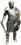

Информация о персонаже


Дополнительные возможности
Мирка |
|||||||||||||
| Картинка для сетки: | |||||||||||||
Картинка сетки (по умолчанию - синяя):
|
|||||||||||||
Бои |
|||||||||||||
Биржа |
|||||||||||||
Клавиатура |
|||||||||||||
Клановое |
|||||||||||||
| Своё сообщение для КТ: | |||||||||||||
Разное |
|||||||||||||
|
Цены на ресурсы кудесника сила|ловкость|интуиция|мудрость|интеллект|ОД|жизни|мана|сокрушение|уворот|точность|стойкость|пр.брони|пр.блока|доп.урон|защита|c.огню|c.воде|c.воздуху|c.земле|дивный : |
|||||||||||||
Настройка аватара
Стандартный м |
Берсеркер |
Ассасин |
Боевой маг |
Экзекутор |
Кошмар |
Белый маг |
|  Скорбящий |
 Лучник |
Звёздный |
Варвар |
Гном |
Воин рагнарока м |
Ветеран 10 м |
Стандартный Ж |
Валькирия |
Тень |
 Саммонер |
Носферату |
Танцующая |
Владычица |
Чёрная вдова |
Ноющая тень |
Ариман |
Маг воздуха |
Кристаллический |
Воин рагнарока ж |
Ветеран 10 м |
Случайно нашел |
Дарт Вейдер |
Лея Органа |
Стандартный м2 |
Стандартный ж2 |
||
Своя картинка |
Своя картинка |
Настройка кнопок
Или измените порядок блоков(перетаскивая за правый угол):
-
Звук каждые 10 минут пока не проголосуешь:
-
-
-
-
-
-
X px, количество сообщений:
-
-
-
-
-
-
-
-
-
-
. Тип картинок ГР: Подсветка ареала:
-
-
-
Картинка следа (по умолчанию - красная):
| Голубой | Зелёный | Красный | Белый | Жёлтый |
 |
|||||
| Синий | Зелёный | Оранжевый | Розовый | Красный | Голубой |
FAQ
Настройка аватара
Настройка кнопок
Настройка таймеров
Настройки чата
Системные настройки
Информация о персонаже
Клан
Дополнительные возможности
Настройка форума
Горячие клавиши
О плагине.↑
?: У меня браузер FireFox или аналогичный, я не могу установить плагин. Что делать?!: Перед первой установкой расширения на Мозиллу сделать следующее:
1. В адресной строке ввести about:config
2. В открывшейся вкладке в строку поиска ввести xpinstall.signatures.required
3. В найденной строке изменить значение на false , дважды кликнув по ней
Внимание! В последних версиях FF можно подключить только сертифицированные плагины
подробнее видео
?: После установки плагина на Мозиллу ничего не работает и не грузится. Почему?
!: Скорее всего у Вас включен режим многопроцессорности. Для отключение режима нужно набрать "about:config" в адресной строке, найти параметр "browser.tabs.remote.autostart" и поменять на false.
?: Будет ли поддержка многопроцессорности в плагине?
!: Желание организовать такую поддержку есть, однако, на данный момент не хватает ни времени, ни знаний.
?: У меня браузер Chrome или аналогичный, я не могу установить плагин. Что делать?
!: Чтобы установить плагин не из магазина google необходимо:
1. Открыть Дополнительные инструменты -- расширения
2. Перетащить плагин в расширения
подробнее видео
Однако после перезапуска расширение будет отключено (это политика гугла). Обойти её можно различными способами:
https://my-chrome.ru/2014/03/yes-we-can/ , но ими вы пользуетесь на свой страх и риск.
?: У меня браузер Chrome, но при попытке скачать плагин с магазина выдаётся ошибка. Что делать?
!: Данная проблема именно хрома. Как это лечится можно увидеть по ссылке
?: После установки плагина осталась прежняя версия, как быть?
!: Возможно плагин установился не корректно. Попробуйте удалить его, а затем добавить снова, предварительно сохранив свои настройки.
?: Я установил плагин Er-help Extension, как мне изменить настройки?
!: В правом верхнем углу браузера появилось изображение
 . Нажмите на него и выберите настройки.
. Нажмите на него и выберите настройки.?: Где можно узнать, что изменилось в последней версии плагина?
!: Подобную информацию можно увидеть на странице.
?: Кто занимается разработкой плагина?
!: Начинал разработку MurLemur, затем к нему присоединился Норб. Сейчас поддержкой плагина занимается SaintDragon.
Хочется отдельно отметить zhen4ek и Phoenix которые очень сильно помогают советами.
?: Контролирует ли кто-то из Администрации проекта разработку плагина, а то мало ли что вы можете туда запихать?
!: Да, от Администрации руку на пульсе держит Phoenix.
?: Оплачивается ли работа над плагином?
!: Зарплаты как таковой нет, всё делается на чистом энтузиазме. Но порой от Администрации бывают какие-либо бонусы. Мне, например, один раз был бонус в золоте.
?: Почему MurLemur не занимается больше плагином?
!: MurLemur уходил в ПСЖ. Почему? Спросите у него.
?: Почему Норб не занимается больше плагином?
!: Норб отписался об этом на форуме.
?: Я нашел баг в плагине, что мне делать?
!: Не нужно писать в приват SaintDragon. Я могу быть не у компа или занят другим делом. Отпишитесь на форуме или у нас на сайте.
?: Будут ли какие-то улучшения связанные с ТО?
!: В ближайшее время нет. Для посещения ТО нужен 21 уровень.
?: Можно ли реализовать покупку чего либо в один клик? Например, 100 РС вместо 10? Или автоматическое голосование при входе в игру?
!: Да, реализовать такое можно, но реализованы подобные идеи не будут, т.к. данные действия являются автоматизацией игрового процесса.
?: Я установил плагин, но не увидел каких-либо изменений. Что мне делать?
!: Необходимо обновить страницу (клавиша f5) или перезапустить браузер.
Системные настройки.↑
?: Можно ли как-то сохранить свои настройки и загрузить их на другом компьютере/после установки плагина?!: Да, можно. Для этого необходимо зайти в системные настройки, снизу будут 2 кнопки: "Экспорт настроек в файл" и "Импорт настроек из файла". При экспорте создастся файл "er-ext-config" с настройками, именно его и нужно будет импортировать в нужное место.
?: Для чего функция "при отключении/включении плагина автоматически обновлять табы с гранями"?
!: Если Вы отключали плагин, часть функций в гранях могут в нём не работать до перезагрузки страницы. Эта функция принудительно перезагрузит страницу, чтобы Вы не забыли сделать это.
?: Для чего оповещение при выходе новой версии плагина?
!: Не всегда проходит автоматическое обновление плагина. Чтобы пользоваться актуальной версией бывает полезным оповещение о выходе новой версии.
?: Что такое "Адрес фоновых скриптов"?
!: Данная опция отвечает за просмотр вещей на персонаже при зажатом ctrl. Если текущий адрес фоновых скриптов не доступен, вместо него ставится "er-help.ru/extension", если и он не доступен подставляется "крон.жукодавы.рф/er/". Проверка осуществляется при запуске браузера с установленным плагином/установке плагина.
?: Что такое "Свои звуки для оповещений"?
!: Данная опция позволяет добавить собственный звук к списку выбора помимо стандартных звуков плагина.
Настройки аватара.↑
?: Что такое "Аватарка на карте"?!: Данная опция заменяет стандартные фигурки на карте местности (например, ОВЛ или ОПП) на выбранные Вами. По умолчанию подставляется мужская стандартная фигурка
?: Какие аватарки можно поставить на карте? !:
Стандартный м |
Берсеркер |
Ассасин |
Боевой маг |
Экзекутор |
Кошмар |
Белый маг |
Скорбящий |
Лучник |
Звёздный |
Варвар |
Гном |
Воин рагнарока м |
Ветеран 10 м |
Стандартный Ж |
Валькирия |
Тень |
Саммонер |
Носферату |
Танцующая |
Владычица |
Чёрная вдова |
Ноющая тень |
Ариман |
Маг воздуха |
Кристаллический |
Воин рагнарока ж |
Ветеран 10 м |
Случайно нашел |
Дарт Вейдер |
Лея Органа |
||||
!: Данная опция позволяет заменить стандартную картинку на картинку, выбранную Вами.
?: Как установить нужный аватар?
!: Для установки аватара можно кликнуть по понравившейся картинке, выбрать из списка или прописать путь до картинке в поле "своя картинка".
Информация о персонаже↑
?: Где размещаются дополнительные кнопки отмеченные в "клановых сервисах"!: Кнопки располагаются в общедоступной информации о персонаже (https://www.ereality.ru/info). Чтобы увидеть более детальную информацию о расположении, нужно нажать на "глаз" возле настройки.
?: Я нажимаю на кнопку (например, Просмотр игрока от клана «Гламурный Клуб»), но информация о персонаже съезжает и не выдаёт нужных данных.
!: Попробуйте перезапустить браузер.
?: Я нажимаю на кнопку, но ничего не происходит / страница долго грузится, а потом выдаётся сообщение о невозможности отобразить страницу.
!: Скорее всего клановый сайт не доступен, есть проблемы с интернетом или ГР лагают, попробуйте позже. Если ситуация повторится многократно, отпишитесь в теме багов плагина.
?: Я пытаюсь просмотреть информацию об игроке, а мне выводится неверная информация.
!: Плагин подгружает информацию с сайта, скорее всего ошибка в сервисе от клана, напишите их программистам.
Настройка кнопок↑
?: Что такое вертикальное расположение кнопок дополнения?!: При настройке плагина появляются кнопки чуть выше чата. Многим игрокам такое расположение не нравится / неудобно, поэтому при нажатии данной опции кнопки будут располагаться в 2 ряда вертикально.
?: Для чего вертикальное кнопки дополнения в один ряд?
!: При активной предыдущей опции кнопки дополнения будут отображаться не в 2 ряда, а в один. У некоторых игроков второй ряд кнопок закрывает часть игровых функций.
?: Для чего Увеличенные кнопки дополнения (след, ареалы, стата фрак)?
!: Некоторым игрокам текущие кнопки кажутся слишком маленькими, например, из-за высокого разрешения экрана. Данная функция позволяет немного увеличить размер кнопок.
?: Как настроить нужные мне кнопки?
!: В настройках конпок есть поле "Кнопки". Туда нужно ввести данные о желаемых кнопках и их расположении. Цифры соответствуют кнопкам из списка ниже. Между цифрами необходимо ставить разделители "|". Так, например строка "1|2|6" выведет кнопки голосования-телепорта-логгера, а строка "1|6|2" голосования-логгера-телепорта.
?: Можно ли настроить кнопки, не прописывая цифры?
!: Да, можно. При нажатии 1 раз на область кнопки, она подсветится жёлтым, при нажатии после этого на другую область, они поменяются местами. Если область выделена зелёным, кнопка активная, если красным - не активная. При нажатии двойным кликом по области кнопки меняется её статус с активного на пассивный и наоборот. При переоткрытии настроек вначале будут идти активные настройки, затем - не активные.
?: Как пользоваться опцией "Тихие ***"?
!: Для запуска модуля необходимо нажать на треугольник в соответствующем модуле. Для остановки - на квадратик. Пока модуль активный, информация накапливается и отображается по требованию. Кнопка с двумя квадратами и стрелочкой позволяет скопировать накопившуюся информацию в чат. Кнопка с овалами включает/отключает оповещения в чат. Кнопка с цилиндром (блинами) и крестиком очищает статистику.
?: Что такое "Голосование за проф. праздники"?
!: О праздниках можно прочитать на форуме. При нажатии на кнопку происходит голосование за выбранную Вами профессию.
?: Как выбрать профессию для голосования?
!: При установке плагина профессия выбирается случайным образом, поэтому может выпасть та профессия, за которую Вы еще не можете голосовать. Для изменения выбранной профессии нужно нажать правой клавишей мыши на кнопку голосования и выбрать нужную профессию из списка.
?: Я нажал на кнопку голосования и она исчезла.
!: Так и должно быть. Кнопка скрывается после использования, т.к. от неё в этот же день толку больше нет.
?: Я проголосовал, зашел на другом компьютере, но кнопка у меня отображается.
!: Это нормально. Информация о том, что Вы голосовали, хранится локально на компьютере.
?: Я подгрузил настройки плагина, но у меня не подгрузилась профессия, которую я выбирал.
!: Это нормально. Информация о выбираемой для голосования профессии хранится локально и не попадает в настройки.
?: Что за опция "Звук каждые 10 минут пока не проголосуешь"?
!: Каждые 10 минут идёт проверка на то, есть кнопка голосования или нет. Если Вы еще не проголосовали, идёт напоминание звуком.
?: Что такое "Телепорт малым свитком"?
!: В игре существуют малые свитки телепорта, позволяющие мгновенно переместиться с Вашего текущего местоположения в выбранное. Чтобы не лазить в инвентарь и не искать МСТ там, можно использовать данную функцию. Использовать МСТ можно только если инфентарь доступен, т.е. его можно открыть.
?: Что такое "Колониальные товары"?
!: Появляется кнопка с изображением кораблика, при нажатии на которую открывается блок, где есть информация о колониальных товарах и времени обновления островов (модуль морских путешествий ).
?: Я открыл информацию о товарах, но не вижу времени обновления.
!: В правой части блока, по середине есть стрелка. Нажмите на неё.
?: Плагин показывает, что контрабандист продаёт товар, однако товара у него нет.
!: Плагин берёт информацию из апи игры, если апи не обновилось, плагин покажет неверную информацию.
?: Что такое "Отключение/включение звуков в игре"?
!: Данная кнопка позволяет отключить звуки в игре, не заходя в настройки браузера, а также регулировать уровень громкости.
?: На кнопке управления звуков звук выключен, но звуки играют, и наоборот, по кнопке звук включен, но звуков нет.
!: Скорее всего, вы выключили звук и убрали кнопку или очистили кэш, пери этом переменные перетёрлись. Нужно убрать и включить по новой кнопку в настройках.
?: Что такое "Кнопка заморозки чата"?
!: Иногда приходится пересматривать то, что Вам написали другие игроки или же какие оповещения были, однако с приходом нового сообщения чат "скачет" вниз. Чтобы избежать "скачков" нужна данная функция.
?: Что такое "Логгер ЛЧ"?
!: Логгер личного чата сохраняет сообщения из чата. Включение/отключение функции, а также чистка и чтение, происходят через дополнительную кнопку. Непрочитанные сообщения подсвечиваются красным, прочитанные - зелёным. Функция нужна чтобы ничего не пропустить.
?: Что за поля с Х и px возле кнопки логгера?
!: Данная опция задаёт ширину и высоту для функции "Логгер ЛЧ". По умолчанию 900х400.
?: Что такое "Количество сообщений"?
!: Данная опция задаёт максимальное количество сообщений, которое будет храниться в "логгере ЛЧ" на данном компьютере.
?: Что даёт функция "Сортировка сообщений - от старых к новым"?
!: При активной опции Логгер ЛЧ сортирует сообщения от старых к новым.
?: Что такое "Тихая разведка"?
!: Функция блокирует сообщения в чат о состоянии разведки. При этом информацию о разведке Вы можете увидеть на карте.
?: Что такое "Тихая рыбалка"?
!: Функция блокирует сообщения в чат о соскочилах или клёве. Т.е. нет лишних сообщений каждые 25 секунд. При этом информацию о клёве Вы видите в той же опции, где описывается количество пойманных рыб каждого вида / соскочил / опыта / подходов. Такие же фильтры работают на ловле клеткой.
?: У меня включена функция тихая рыбалка, но я слышу звук подхода.
!: К сожалению звук подхода идёт раньше события на клёв, отключить его на данный момент нельзя. Если же Вам мешает звук, рекомендуется на время рыбалки выключить звук подхода.
?: Что такое "Восстановления здоровья персонажа за счет абилок"?
!: Бывают ситуации, когда нужно срочно восстановить ЖМЭ и каждая секунда на счету (например, в инстансе), тогда вместо того, чтобы переходить кланка--абилки--восстановить ЖМЭ, игроку достаточно нажать всего одну кнопку. Работает только у игроков в клане.
?: Что такое "Показывать только живых на Острове Крови"?
!: При включённой опции на секторе выделяются поверженные игроки более светлым шрифтом. Для использования достаточно зайти на сектор.
?: Что такое "Блокировка контекстного меню"?
!: Данная функция блокирует меню браузера, вызываемое правой кнопкой в области чата.
?: Что такое "Возможность включать след (на ОК, альенах, ОВЛ, ОПП, ОДЛ)"?
!: Данная функция позволяет отмечать сектора по которым Вы уже ходили. Бывает полезна, например, при поиске сундуков на ОК.
?: Что за поле рядом с "возможностью включать след"?
!: Данная опция отвечает за картинку для следа. Чтобы изменить её можно ввести адрес картинки или выбрать из списка внизу настроек. По умолчанию цвет картинки - красный.
?: Что такое "Подсчет игроков на локации"?
!: Данная функция позволяет определить сколько игроков из каждой фракции находятся на секторе, где Вы стоите, а затем сообщить данные сведения софракам для дальнейшей координации действий.
?: Для такое "Подсчет прибыли хаотических и групповых боев"?
!: С помощью данной функции можно увидеть сколько хаотических и групповых боёв было проведено, сколько серебра примерно заработано.
?: Я сегодня проводил бои на работе с включённой опцией, но мне выдаются нули. Почему?
!: Данные о боях хранятся локально на компьютере.
?: Что такое "Тихие бои"?
!: Функция блокирует сообщения в чат о прошедшем бое. При этом информацию о наградах Вы можете посмотреть в появляющимся окошке.
?: Что такое "Ареалы обитания монстров"?
!: На ОВЛ и ОПП обитает большое количество монстров, запомнить местоположение всех не реально, а сверяться с картами каждый раз не удобно. Для того, чтобы точно знать где могут располагаться монстры, нужна эта функция.
?: Что такое "Тип картинок" рядом с ареалом ботов?
!: Данное поле позволяет указывать папку, в которой хранятся картинки ГР. Например, раньше картинки были в папке map, затем их заменили на другие картинки, расположенные в mapnew, при этом ареал перестал работать. На данный момент: Зимой картинки используются из папки mapwinter, летом mapnew, старые картинки - map. Чтобы не ждать новой версии плагина, можно самим указать какой тип картинок используется и ареал ботов будет функционировать.
?: Что такое "Подсветка ареалов"?
!: Данная опция отвечает за подсветку ареала обитания бота. Чтобы изменить её можно ввести адрес картинки или выбрать из списка внизу настроек. По умолчанию цвет картинки - синий.
?: Что такое "Фильтр ботов"?
!: Видимость монстров настраивается по их уровням через настройки-интерфейс. Чтобы каждый раз не лазить в настройки нужна данная функция.
?: Что такое "Участие в элитном турнире"?
!: Данная кнопка позволяет участникам элитного турнира вступать в заявки на бои и выходить из них не заходя во вкладку "бои--турниры". Удобно использовать во время мирного подхода.
?: Что такое "Открыватель подарков"?
!: Данная кнопка позволяет быстро распаковать нужные подарки, если доступна информация о персонаже. Кнопка доступна с 01.01 по 31.03.
?: Для чего нужна настройка в "Открывателе подарков"?
!: При нажатии на "настройку" появляется поле, в которую можно прописать желаемые параметры для окрывателя. Нужные параметры можно получить через сервис
?: Что такое "Телепорт абилками"?
!: Тоже самое, что и телепорт малым свитком, только тратится не свиток, а абилки клана.
Настройка таймеров.↑
?: Как мне настроить отображение таймеров?!: В настройках таймеров есть поле "Таймеры". Ниже надписи "Перечислите расположения таймеров" расположены цифры, наименование таймера и поля. Цифры соответствующие таймеру необходимо писать в большое поле сразу после слова таймеры вверху в виде 1|2|3 , где цифра - позиция соответствующего таймера. Если цифры не будет, таймер не появится и в игре. Поля, рядом с таймером задают название соответствующего таймера в игре. Например, если Вы напишите у Таверны в поле "Кухня", то и в игре, в поле таймеров будет отображаться "кухня".
?: Можно ли настроить таймеры, не прописывая цифры?
!: Да, можно. При нажатии 1 раз на область таймера, она подсветится жёлтым, при нажатии после этого на другую область, они поменяются местами. Если область выделена зелёным, таймер активный, если красным - не активный. При нажатии двойным кликом по области таймера меняется его статус с активного на пассивный и наоборот. При переоткрытии настроек вначале будут идти активные настройки, затем - не активные. Разделители нужно будет прописывать вручную, если их нужно больше одного и в последнюю очередь, иначе они будут перетераться.
?: Что за настройки сверху таймеров?
!: Это настройки окошечка с таймерами, в строке чата. Прозрачность окошка таймера: Пассивно - если мышь находится в любом месте, кроме таймера, при наведении - если навели мышь. Настройки размеров окошечка задаются для каждого размера окошечка. Опция актуально, т.к. все пользователи имеют разные мониторы и разрешения экрана.
?: У меня стоят настроены таймеры поместья, ювелирной, таверны, элитки, но почему-то время не отображается.
!: В таймерах поместья, ювелирной, таверны, элитки нужно обязательно находиться в соответствующей локации. Проверка на нахождение в нужной локации идёт 1 раз в 10 секунд. Поэтому, чтобы таймер заработал корректно, нужно простоять в локации не менее 10 секунд. Учитывая, что запросы идут каждые 10 секунд, не рекомендуется оставлять персонажа в указанных локациях, если у Вас есть лимит интернета.
?: У меня настроены таймеры мирных аур, очков работы, боевых аур, ветеранского дохода, лицензий для питомцев, но почему-то время не отображается.
!: Для получения данных для указанных таймеров нужна доступность информации о персонаже, иными словами, во время боя или мирного подхода данные не будут обновлены. Актуализация данных идёт 1 раз в 10 минут и, если на это время пришелся подход или бой, данные не актуализируются. Для корректного отображения данных нужно будет перезагрузить страницу вне боя / подхода.
?: Можно ли как-то актуализировать информацию на таймерах поместья, ювелирной, таверны, элитки не заходя в локацию?
!: Нет.
?: Можно ли как-то актуализировать информацию на таймерах мирных аур, очков работы, боевых аур, ветеранского дохода, лицензий для питомцев не перезагружая страницу?
!: Да, можно, если у Вас есть один из рабочих таймеров: Рост профессий, Адреналиновый порыв, Мощь клана, Рост опыта, Рост умений, Кровь феникса, Очки работы, Доход ветерана. Для актуализации нужно нажать на один из них.
?: Я пришел с работы домой, но таймер отображает не корректное время, а на работе всё было нормально.
!: Информация о таймерах хранится на локальном компьютере, поэтому актуализировать данные придётся дома.
?: У меня перестал обновляться таймер / время на таймере не актуальное, хоть и стою в нужной локации более 10 секунд. Как быть?
!: Скорее всего у вас подвис скрипт в браузере. На данный момент ошибка замечена только в хром-браузерах. Нужно перезагрузить страницу и таймер должен будет заработать.
?: Что такое "Прозрачность окошечка таймера"?
!: Данное число показывает на сколько будет прозрачно окошечко, где расположены таймеры. 0 - полностью прозрачно, 100 - полностью видимо. Прозрачность позволяет видеть чат за таймером.
?: В чём отличие прозрачности пассивной от прозрачности при наведении?
!: Прозрачность при наведении - прозрачность, которая присваивается окошечку с таймерами когда на нём находится мышка. Пассивная - когда мышка находится в любом другом месте.
?: Что такое настройки размеров окошечка таймера?
!: Данная опция позволяет задать размер шрифта и ширину окошечка таймера. В игре, при нажатии ПКМ на таймер можно будет выбрать "малый/средний/большой" размер окошечка, с заданными здесь характеристиками.
?: После завершения отсчёта времени таймер пропадает и я забываю об оповещении, как быть?
!: Включите опцию "Не скрывать таймеры после завершения отсчёта", тогда таймер будет отображаться красным цветом и уйдёт в минус.
?: У меня стоит опция "Не скрывать таймеры после завершения отсчёта", но в данный момент я не хочу идти до локации и выставлять продукцию, как убрать таймер?
!: Есть 2 варианта избавиться от таймера: 1. Нажать на надпись и она скроется. 2. Перезагрузить страницу.
?: Что даёт таймер "Полоса разделения"?
!: Данная опция добавляет не является таймером и добавляет разделитель, например, если вы хотите отделить таймер таверны от таймера аур.
?: Что даёт таймер "Таверна"?
!: С помощью таймера можно определить - когда нужно вернуться в таверну, чтобы забрать готовую продукцию или добавить новую. Таймер обновляется при нахождении во вкладке "крафт" или "рабочие", при действиях с продукцией.
?: Что даёт таймер "Ювелирка ЗЛО", "Ювелирка БЗО"?
!: С помощью таймера можно определить - когда нужно вернуться в ювелирную мастерскую, чтобы забрать готовую продукцию или добавить новую. Соответствеенно, БЗО - Бирюзовый остров; ЗЛО - Зеленый остров.
?: Что даёт таймер "Поместье"?
!: Зайдя в своё большое / среднее / малое поместье Вы используете карты поместья. Они появляются каждые 3/4/5 часов в зависимости от типа. Чтобы не запоминать сколько у Вас карт и когда появится новая, нужен данный таймер.
?: У таймера "Поместье" пишутся "?" в количестве карт и во времени, из-за чего?
!: У Вас активна опция "Не скрывать таймеры после завершения отсчёта", при этом информация о поместье либо еще не получена (не были в поместье после установки плагина), либо количество карт 5 и больше по таймеру (если Вы например, пользуетесь плагином и дома и на работе, то таймер работает всё равно, и считает, что время от последнего посещения поместья).
?: Что даёт таймер "Питомник"?
!: Таймер отображает количество накопленных лицензий для отправки питомца в бой и время для получения новой лицензии.
?: Как работает опция отображать яйца, если они есть в питомнике?
!: Если у Вас появились яйца в питомнике, то рядом с областью таймеров будет отображаться соответствующее количество яиц. Для работы таймера не нужен таймер лицензий для питомцев.
?: Что даёт таймер "Элитка"?
!: Для игроков 15 уровня и выше становится доступным элитный турнир. В награду за занятые места выдают элитный опыт, который можно потратить на очки тренировки. На обмен опыта на очки тратится время. Это время отображается в таймере.
?: Что даёт таймер "Рост профессий", "Адреналиновый порыв", "Мощь клана", "Рост опыта", "Рост умений", "Кровь феникса", "Невидимость", "Величие клана"?
!: Если Вы часто используете любые из мирных или боевых аур и не всегда помните, когда они заканчиваются, а продление их для Вас важно, эта опция поможет Вам сориентироваться во времени окончания.
?: Я ничего не делаю, но по таймеру у меня тратится мирная аура! На самом деле трат нет!
!: На всех таймерах идёт счётчик времени независимо от того работаете Вы или нет. В связи с этим и идут расхождения во времени. Актуализация данных происходит 1 раз в 10 минут, если доступна информация о персонаже.
?: Я хочу установить звук на все ауры, а не только на "Рост профессий" и "Мощь клана", как это сделать?
!: Звуки распространяются на все ауры, а не только на "Рост профессий" и "Мощь клана". Звук заданный для Рост профессий" распространяется на все мирные ауры (Рост профессий", "Адреналиновый порыв"), а звук заданный для Рост профессий" распространяется на все боевые ауры ("Мощь клана", "Рост опыта", "Рост умений", "Кровь феникса", "Невидимость").
?: Что даёт таймер "Очки работы"?
!: С 15 уровня становится доступны морские путешествия. В них есть 2 профессии, где на подходы тратятся очки работы. Очки работы накапливаются каждые 12 минут до максимума 360, чтобы не запоминать количество и постоянно не лазить в инфу о персонаже, есть этот таймер. При накоплении очков работы, больше либо равному значению поля рядом с опцией, текст подсвечивается красным.
?: Я нахожусь на БЗО / ЗЛО и у меня пропал таймер очков работы!
!: В связи с тем, что на БЗО и ЗЛО идёт отображение очков работы более актуальное, чем от плагина, на островах их количество отключено.
?: Что даёт таймер "Доход ветерана"?
!: В ГР были ивенты, позволяющие получить медаль ветерана. Эта медаль даёт доход в серебре и/или золоте 1 раз в месяц. Чтобы не забыть получить халяву нужна данная опция. Если до повышения дохода останется меньше 30 дней, будет выведено соответствующее уведомление, при нажатии на которое, оно скроется на сутки.
?: Что даёт таймер "Ремесленник"?
!: На данный момент опция работает в тестовом режиме. По замыслу таймер должен будет отображать оставшееся время работы на ремесленнике.
?: Что даёт таймер "Личные сообщения"?
!: Данная функция позволяет не пропустить клановое/входящее/фракционное/системное сообщение. Если у Вас есть не прочитанное верхнее сообщение из перечисленных, то выведется уведомление в окошко таймеров. При нажатии на оповещение откроются личные сообщения.
?: Что за буковки рядом с таймером "Личные сообщения"?
!: Установив галочку напротив буквы Вы будете получать уведомления о К - клановом, В - входящем, Ф - фракционном, С - системном сообщении.
?: Что даёт таймер "Клановый квест"?
!: Данный таймер актуален для членов клана. Когда настаёт время кланового квеста, выдаётся сообщение "Клан Квест можно начать". При выполнении кланового квеста выдаётся информация о прогрессе, например "Клан Квест (0/100) 6ч 11м".
?: Что даёт таймер "Кровожадность"?
!: Данный таймер актуален для членов ДП. Он показывает количество оставшейся кровожадности персонажа / количество поражений на ОК.
?: Что даёт таймер "Узор"?
!: Данный таймер актуален для членов клана. Когда у вашего клана становится меньше заданного количества узоров, выдаётся сообщение "Закончились все узоры!". Количество узоров задаётся на вкладке "дополнительные", раздел "Таймеры", опция "Оповещать о узорах, когда их меньше"
?: Что даёт таймер "Статуя"?
!: Данный таймер актуален для членов клана. Когда у клана пропадают все бонусы статуи выдаётся сообщение "А король-то - голый!".
?: Я не в клане, но у меня отображается таймер. Что делать?
!: В большинстве случаев информация о начале квеста / отсутствии узоров и бонусов статуи совпадает с той информацией, которая поступает от внекалновых персонажей. Для того, чтобы не отображался данный таймер, его нужно отключить в настройках.
?: Что даёт таймер "Тактические бои"?
!: Данный таймер показывает информацию о времени лечения юнитов в модуле "тактические бои".
?: Что дают таймеры "Идол из бирюзы" и "Малахитовый идол"?
!: Если доступна информация о персонаже, и на нём нет идола, выводится оповещение в окошко таймеров. Не спорю, есть оповещение в чат со звуком, но лично я 50% оповещений пропускаю из-за рара.
?: Что даёт таймер "Карты юнитов"?
!: Если данный таймер отображается, то в модуле тактика можно забрать карту.
Дополнительные возможности.↑
Мирка
?: Что такое "Показывать пиастры/пыль/запасы/авторитет/ксенотеки"?!: Возле валюты игрока будет отображаться инофрмация и о других ресурсах. Информация обновляется при смене локации или при клике на "Персонаж/Инвентарь/и т.д."
?: Что такое "Кликабельные ники на поляне кудесников и в кузнице"?
!: Чтобы не копировать ник игрока в кузнице/на поляне выберите эту опцию, и, кликнув на никнейм игрока, он автоматически попадёт в строку чата.
?: Что за кнопка "Создание супов по одному клику на рыбках и крабах в таверне"?
!: Нажав на кнопку, Вы создадите соответствующую продукцию в 1 клик, не вводя количества. Например, рыбную похлёбку из 15 текели-ли.
?: Можно ли настроить так, чтобы бралось не 15 текели-ли, а по 5 рыб каждого вида?
!: Нет, нельзя.
?: Не является ли данная функция автоматизацией?
!: Нет, т.к. к серверу посылается только один запрос.
?: Я нажимаю на изображение, но ничего не происходит. Опция включена
!: Перезайдите в таверну.
?: Что такое "'Компактный вид' при покупке рар-инструмента в ЛЗГ"? И для чего он нужен?
!: Компактный вид - это изменение стиля отображения покупок рар-инструмента в ЛЗГ. Он нужен для упрощения покупки.
?: Что за кнопка "Кнопка повторного кудеса на полянке кудесников"?
!: Когда Вы выставляете для кудеса вещи, плагин запоминает последний вариант кудеса. Чтобы не выбирать повторно: тип улучшения -- нужные параметры, можно нажать на кнопку повторного кудеса.
?: Не является ли данная функция автоматизацией?
!: Нет, т.к. к серверу посылается только один запрос.
?: Что за "Фильтры при продаже супов в таверне"?
!: Данные фильтры отображают продукцию повара по определённому критерию, например, прибавку к ХП. Это полезно когда Вы, например, хотите продать все крабы дающие бонус стойкости, но оставить крабов с уворотом. Вы включаете фильтр на стойкость и крабы с уворотом не будут видны.
?: Что такое замена цветных значков разведки на циферные?
!: При разведке на островах могут появляться значки синего, фиолетового и красного цвета. Эти значки заменяются на цифры.
?: Что такое "Ссылка на поиск кудесников и оружейников"?
!: Данная опция добавляет ссылку в кузнецах и на поляне кудесников на сервис от клана Отступники Услуги игроков. Поиск кудесников и оружейников.
?: Что такое "Просмотр качества заточки"?
!: После выполнения подхода в кузнице или при подаче заявки можно нажать на просмотр и перейти на сервис от клана Отступники Оружейник. Расчёт параметров при заточке, где будет осуществлена оценка выполненной заточки.
?: Что за кнопка повторного подкида и начала плавки в литейной?
!: Чтобы подкинуть топливо в литейке, нужно нажать "подкинуть топливо", выбрать топливо и подтвердить выбор (на это тратится около 3 секунд). Данная кнопка позволяет сделать всё в 1 клик. Вы выбираете тип топлива стандартным способом (не обязательно подкидывать), плагин запоминает выбранное топливо и его количество, затем во внутренем зале появляется кнопка: Кинуть *тип топлива* (*количество топлива*). Аналогичная кнопка для начала плавки. Кнопку не видно, если начальный шанс успешной плавки меньше 50%, например, температура при плавке бронзы 820. В скобках пишется количество возможных слитков.
?: Что за кнопки покупки руды и поленьев?
!: В литейке после правок экономики оставили только кнопки покупки/продажи слитков, однако для металлургов более важной является покупка руды и поленьев для плавки. Данные кнопки позволяют сразу открыть биржу с нужным фильтром.
?: Что за кнопки покупки экстрактов на полянев?
!: Данные кнопки позволяют сразу открыть биржу с нужным фильтром.
?: Что за кнопки быстрой покупки материалов для ремесленника?
!: При заходе в мастерскую ремесленника появляются кнопки покупки продукции. Количество покупаемой по умолчанию продукции задаётся в настройках. Если кнопки пропадут нужно будет перезайти в мастерскую.
?: Что такое "Автоподсчёт себестоимости выставления предмета на поляне, оплата кудеснику"?
!: При выставлении своих вещей для зачарования на поляне кудесника будет производиться автоматический подсчёт себестоимости работы. В поле рядом, задаётся сумма оплаты услуг (по умолчанию 10 сер)ю
?: Что за кнопки быстрой покупки материалов для повара?
!: При заходе в таверну появляются кнопки покупки продукции. Количество покупаемой по умолчанию продукции задаётся в настройках. Если кнопки пропадут нужно будет перезайти в таверну.
?: Для чего нужна "Сетка с доступными для раскопки секторами на Бирюзовом и Малахитовом островах"?
!: Некоторым пользователям удобнее видеть разграниченные сектора на островах, чтобы точнее высчитывать расположение сырья.
?: Что такое картинка для сетки?
!: Данная опция отвечает за подсветку ареала с доступными для раскопки секторами. Чтобы изменить её можно ввести адрес картинки или кликнуть на картинку из списка ниже настроек. По умолчанию цвет картинки - синий.
?: Можно ли сделать шансы добычи сырья в плагине?
!: Для вывода подобной информации требуется выполнить много расчётов, из-за чего браузер может подвисать. Отображение нулевых шансов реализовано на картах Карта БЗО, Карта ЗЛО.
Бои
?: Для чего функция "Нападение по «Enter» на кладбище"?!: При сражениях на локации кладбище игроки чаще всего пользуются клавишей Enter для нанесения ударов и экономии времени. С помощью этой функции можно не нажимать пункт "начать" мышкой для начала нового боя.
?: Для чего "Возможность использования «Num - клавиатуры» в бою"?
!: Горячие клавиши для нанесения ударов/блоков - цифры 1-0 на клавиатуре (выше букв). Некоторым игрокам удобнее использование блока цифр (Нам-клавиатуры).
?: Для чего "Интерфейс голосования на альенах по ЛеМурски"?
!: В модуле альенов предусмотрено голосование за исключение игроков, которые чем-то неугодны команде, например, выходят сразу после старта. Данная опция нужна для упрощения голосования.
?: Что за "Быстрый просмотр активных вещей персонажа в локации и в бою" и как им пользоваться?
!: Эта опция позволяет видеть свитки призыва/изгнания у персонажа, наличие эликсиров и рыбных супчиков. Для просмотра нужно на клавиатуре зажать клавишу ctrl и навести мышку на никнейм игрока. Данная опция работает и при наведении на никнейм игрока в бою.
?: Что за функция "Информация о бое (ауры,урон,убийства)"?
!: Данная функция показывает сколько урона Вы уже нанесли и сколько соперников в бою убили. Подобную информацию можно увидеть, если завершили раунд раньше соперника или же по итогам боя.
?: Что за функция "Альтернативные иконки на КТ (Lumen)"?
!: Данная функция заменяет стандартные изображения соперников (красного цвета) на иные . Автор данного модуля - Lumen.
?: Для чего функция "В бою перемещение по кнопке "ё" в первый ряд"?
!: Некоторые игроки любят играть с клавиатуры, без использования мыши. Эта горячая клавиша помогает перейти в первый ряд, например, если воин сражается с магом.
?: Что за Эффект "Залипающего" Enter в бою?
!: Большинство игроков используют авторасстановку ударов и блоков, таким образом, для выполнения хода им достаточно нажать на клавишу Enter. Так вот, чтобы не убивать клавиатуру постоянным нажатием Enter, можно его зажать и ходы будут выполняться автоматически.
?: Если я нажму на Enter и нападу на бота, будет ли он считаться залипшим?
!: Если Вы нападаете в квестовой локации, например, на кладбище, Вам необходимо будет каждый раз нажимать Enter. Если же Вы нападаете на мобов, например, ОПП, то можно будет зажать Enter и нажимать на цифры 1 - 2 - 3, в соответствии номером кучки ботов, и Enter будет считаться залипшим.
?: Для чего нужно "Нападение по Enter в палатке Следопыта.".
!: Уничтожение ботов у Следопыта вручную идёт быстрее, чем при использовании опции "авто". Для ускорения процесса нужно будет нажать Enter, тогда игрок нападёт на указанную кучку.
?: Для чего функция "По ПКМ копировать информацию о ботах на секторе в чат, подобно механизму на альенах"?
!: Функция предназначена для передачи информации о местоположении ботов посредством чата. Проще нажать кнопку 1 раз, чем вводить название ботов и сектор расположения.
?: Для чего нужна функция "Автосмена комплекта"?
!: Игроки, имеющие несколько комплектов (амуниция, приёмы, свитки), например, для "КТ", "ОК", "альенов", "ботов" и т.д. периодически забывают их сменить. Чтобы смена комплекта проходила автоматически, можно использовать данную функцию.
?: Для чего След для сокомандников на Темном Острове?
!: Чтобы видеть как передвигаются товарищи по команде.
?: Где может пригодиться ссылка на быстрый выход?
!: Рядом с ником появляется Х. При нажатии на него происходит переход по адресу https://www.ereality.ru/exit.php, что позволяет мгновенно разлогиниться (как будто Вы нажали меню--выход). Это полезно на ОК или на острове альенов.
Биржа
?: Что даёт Механизм быстрого выставления однотипных лотов для биржи?!: Он позволяет задать такие параметры как цена и время выставления лота, таким образом, при выставлении большого количества лотов, Вам не нужно каждый раз вносить эти данные.
?: Что даёт опция покупка лота целиком на бирже?
!: При покупке ресурсов в ГР нужно вводить их количество, данная кнопка позволяет скупить весь лот сразу с максимальным количеством ресурсов.
?: Для чего Быстрый поиск вещей на оффлайн бирже при выставлении их на продажу?
!: Через этот поиск открывается новое окошко с сервисом "Биржа от СП", где автоматически вводятся названия предметов. Это полезно, чтобы узнать по каким ценам выставлены лоты.
?: Что такое Ссылка на гос цены ресов на бирже (при поиске и выставлении на продажу)?
!: При выставлении ресурсов на продажу порой бывает выгоднее продать ресурсы в гос, чем выставить на бирже. Чтобы сориентироваться по ценам, можно воспользоваться кнопкой для открытия сервиса "Ресурсы в госе. Цена и количество".
?: Что такое Закладки на бирже для быстрого поиска? Как их использовать?
!: Если Вам нужно часто искать какой-то предмет, например, для поместья можно использовать эту опцию. Опция сразу подставляет название предмета в фильтр и начинает поиск. Для добавления предметов нужно нажать в сервисе Биржи от СП или же при собственном поиске на бирже. Для удаления нужно нажать на
 .
.?: Механизм быстрого выставления однотипных лотов для островных бирж?
!: Механизм схож с выставлением обычных лотов. Он позволяет задать цену лота, таким образом, при выставлении большого количества лотов, Вам не нужно каждый раз вносить эти данные.
?: Что такое ссылка на поиск кудесников и оружейников?
!: Данная опция добавляет на поляну кудесника и в кузнецу ссылку на биржу услуг, сервис - Услуги игроков. Поиск кудесников и оружейников.
Клавиатура
?: Что за Возможность использования «Num - клавиатуры» при вводе капчи?!: На большинстве клавиатур справа располагается блок цифр называемой Num-клавиатурой. В качестве альтернативного ввода капчи можно использовать её при активной опции.
?: Для чего возможность передвижения по инстансу стрелочками или кнопками WASD на клавиатуре?
!: Для ускорения передвижения и чтобы не использовать мышь. Можно нападать и передвигаться только с клавиатуры.
?: Что за Возможность кнопкой ESC отменять маршрут (ОВЛ, ОПП)?
!: При передвижении на большие расстояния на ОВЛ или ОПП создаётся маршрут перемещения. Вместо нажатия кнопки "отмена" можно нажать кнопку клавиатуры ESC при активной опции.
?: Для чего возможность передвижения в шахте кнопками QEZC на клавиатуре?
!: Для ускорения передвижения и чтобы не использовать мышь.
?: Что за Горячие клавиши с ALT(q, w, e, r)(Дневник квестов, Сообщения, Контакты, Книга призыва)?
!: При зажатой клавише ALT и нажатии соответствующей клавиши открывается один из модулей граней: q - Дневник квестов, w - Сообщения, e - Контакты, r - Книга призыва.
?: Что делает обновление локации при нажатии на r/R/к/К?
!: Данный функционал обновляет список игроков в локации, как будто бы Вы нажали на кнопку "Локация".
?: Что делает восстановление за счёт абилок при нажатии на h/H/р/Р?
!: Данная функция позволяет быстро использовать клановые абилки для восстановления ЖМЭ.
?: Предусмотрены ли в плагине "горячие клавиши" и какие функции они выполняют?
!: Да, предусмотрены
| Сочетание | Описание | Условия |
| Q E Z C | Перемещение на северо-запад/северо-восток/юго-запад/юго-восток | Функционал работает в шахте |
| W A S X D | Перемещение на северо/запад/юг/юг/восток | Функционал работает в инстансе |
| r R к К | Обновление локации | |
| h H р Р | Восстановление абилками | |
| ALT+Q | Открыть дневник квестов | |
| ALT+W | Открыть личные сообщения | |
| ALT+E | Открыть панель контактов | |
| ALT+R | Открыть книгу призыва | |
| ALT+1[2,3,4,5] | Одеть комплект с номером 1[2,3,4,5] | Нужно открыть инвентарь персонажа |
| Ctrl + мышь | Отображает, что одето на персонаже | Нужно зажать Ctrl и навести мышь на никнейм игрока |
| F1/F2 | Призвать бота | В бою |
| F4 | Включение/отключение автохода | В бою |
| ESC | Действие как при нажатии кнопки "Перемещение" | |
| ESC | Отмена маршрута | При активном маршруте |
| ё | Переход в первый ряд | В бою |
Разное
?: Для чего подмена ссылок в сервисах поместий биржу из ЛК?!: Некоторые сервисы СП переехали на другой адрес после обновления, но у части игроков могли остаться устаревшие ссылки. Данная опция подменяет старый адрес на новый.
?: Как использовать возможность заполнения лотереи случайным образом по кнопке?
!: Заходите в зону отдыха, покупаете билет / получаете его в подарок и нажимаете заполнить.
?: Что за Информация о предстоящих глобальных событиях?
!: В гранях есть случайные события которые возникают периодически. Для получения информации на ниж нужно нажать на значок .
?: Что такое кликабельные ники игроков в поместье (логи и случайные нападения)?
!: При нападении на Вас в поместье пишется никнейм игрока, напавшего на Вас. Этот функционал позволяет нажать на никнейм.
?: Что такое кликабельные сектора в «Дневнике квестов»?
!: Дневник квестов - это журнал заданий для персонажа. Часто выдаются задания, которые необходимо выполнить на определённом секторе. Сектор виден в дневнике квестов и чтобы его не пришлось копировать можно воспользоваться данной функцией.
?: Что за функция с автоматическим центрированием на карте шахт Отступников, при перемещении персонажа?
!: На нашей карте шахт по мимо прочих функций предусмотрена функция поиска сектора, где может находиться персонаж. Данная функция позволяет в автоматическом режиме подставлять нужный этаж и сектор, где находится ваш персонаж. Таким образом, Ваше местоположение на карте всегда будет актуально. Информация на карту передаётся при перемещении или начале подхода.
?: Как использовать контестное меню с картами на локации?
!: При нажатии на слово "локация" правой клавишей мыши появится меню, позволяющее открыть карту нужной местности.
?: Как это, информация об экспедициях в поместье в перевернутом виде (видно к-во экспедиций и кого возвращаем)?
!: Многие игроки посылают десятки экспедиций и не возвращают их до необходимости. При таком подходе информация о всех экспедициях может не вместиться в окно браузера. При использовании этой функции самые ранние экспедиции (которые должны будут вернуться первыми) будут не сверху браузера, в скрытой части, а снизу.
?: Что за кнопка "Выбрать все вещи" в последнем оплоте?
!: Данная кнопка позволяет выбрать все возможные вещи для обмена на авторитет. Особенно полезна данная функция когда вещей много.
?: Для чего "Добавлять goto в контестное меню с картами на локации"?
!: Через ключь goto можно перейти на сайт с авторизацией.
?: Что за кнопка для объединения всех ресурсов в инвентаре?
!: Данная кнопка позволяет автоматически объединить все однотипные ресурсы в инвентаре. Функция бывает полезна когда Вы купили, например, 10 лотов рыбы и их надо объединить в одну кучку.
?: Что за кнопки для зазывания сокланов на клановый турнир?
!: Не все игроки помнят, что должен стартовать клановый турнир. Данная функция позволяет создать кнопки, при нажатии на которые в строку чата попадут никнеймы до 9 Ваших соклан находящихся в сети и еще не ходивших в КТ.
?: Что за поле рядом с кнопкой для зазывания на КТ?
!: Данное поле добавляет текст к сообщению о КТ. Например, при пустом поле будет выводиться сообщение ":102: КТ !!!", а если в поле ввести, например, "начало в 30 минут", то выведется сообщение ":102: КТ !!! начало в 30 минут".
Настройки чата.↑
Фильтры
?: Что такое фильтры чата "Нельзя вмешаться за более сильную команду, если она сильнее второй в 1.5 раза", "Вы не можете вмешаться в закрытый бой", "Дождитесь завершения боя", "Фракция может принимать участие в бою только на одной стороне", "Тюрьма пуста!", "На острове нет подходящих противников.", "Нужно больше крови! Победите хотя бы в одном обычном бою на Острове Крови, чтобы Портал Коварства открыл для вас свои врата!" и для чего они нужны?!: Эти фильтры позволяют игнорировать однотипные и частоповторяющиеся сообщения. Таким образом надписи вы увидите не чаще 1 раза в 5 минут.
!:
?: Что за функция "Фильтровать сообщение о помощи в чате фракции"?
!: Данная опция позволяет отфильтрокать сообщения о помощи от игроков, если в тексте зазыва указывается уровень меньше, либо равный уровню в поле "Минимальный уровень".
?: Что за функция "Фильтровать сообщение о собранном кольце рандома"?
!: Фильтруется сообщение вида "Кто-то собрал Кольцо Рандома! Его удача обернулась для кого-то еще потерей", сообщающее о сборе нового кольца.
?: Что за функция "Фильтровать сообщение о Элитном Турнире"?
!: Фильтруется зазывалка в Элитный турнир для игроков 15+ уровня.
?: Что за функция "Фильтровать сообщение о Золотой Подкове"?
!: Фильтруется сообщение вида "Поздравляем победителя Золотой Подковы!", сообщающее о получении кем-то артефакта за подковы.
?: Что за функция "Заменять стандартное сообщение на "Вы вступили в заявку" при вступлении в очередь элитного турнира"?
!: Заменяется стандартное длинное сообщение о вступлении в элитный турнир со временем и монетами на сообщение "Вы вступили в заявку!".
?: Что за функция "Добавлять к случайным событиям процент награждаемых"?
!: Данный функционал позволяет добавлять в информацию о глобальном событии процент награждаемых, чтобы каждый раз не лазить в документацию.
?: Что за функция "Фильтровать сообщения о боях за артефакты"?
!: Фильтруется сообщение вида "Участвуйте в хаотических боях и получайте золото и бесплатные артефакты каждый день", зазывающие игроков младшего уровня в бои.
?: Что за функция "Фильтровать сообщение об исчерпанном лимите в боях за артефакты"?
!: Фильтруется сообщение вида "Спасибо за ожидание в заявке в течение большого количества секунд! Ваш лимит серебра за ожидание в заявке на сегодня исчерпан, он обнулится после полуночи!", актуальное для игроков младшего уровня.
Цвета
?: Что за функция "Подсвечивать фон входящих сообщений"?!: Данная функция выделяет сообщения (после времени), адресованные Вам, или Ваш никнейм (при отправке) выбранным цветом.
?: Что за функция "Все сообщения других пользователей одним цветом"?
!: Данная функция позволяет игнорировать игровые настройки пользователя "Цвет ваших сообщений в чате" и заменяет цвет его сообщений на выбранный Вами.
?: Как выбрать нужный цвет?
!: В браузерах на движке Chrome достаточно нажать на кнопку и выбрать нужный цвет. В браузерах на движке FireFox нужно указать цвет в виде web-цвета или RGB, например: red или #FF0000.
Чат
?: Что за Возможность поиска секторов по клику из чата (работает на ОВЛ, ОПП, КТ, ОК, ОДЛ, Поднебесной)?!: Некоторые игроки скидывают координаты секторов в чат. При нажатии на эти координаты они попадут в поиск секторов автоматически. Внимание! Иногда бывает, что подсвечиваются не координаты, а ссылки или сообщения похожие на координаты.
?: Для чего нужна функция "При клике на локацию печатать сектор и кол-во людей на нем в чат"?
!: Функция нужна для оповещения товарищей, например, на острове альенов, или на ОК, где в бою собралось большое количество игроков.
?: Ссылки на форум из чата игры и личных сообщений при отображении корректируются так, чтобы при переходе по ним автоматом логиниться и заходить в тему. Зачем это?
!: При простом переходе по ссылке игрок может оказаться не авторизованным, из-за чего его права частично могут быть ограничены. Функция добавляет https://www.ereality.ru/goto/ перед ссылкой на форум, что позволяет игрокам сразу же авторизоваться.
?: "При непустой строке чата не завершать бой Enter" - это как?
!: В плагине и в самих ГР реализована возможность завершать ход нажатием Enter. Очень часто в бою мы пишем сообщения другим игрокам, но, если во время отправки сообщения не был завершён раунд, вместе с отправкой сообщения Вы можете сделать нежелательный ход.
?: Для чего нужна функция "Показывать однотипные сообщения о поломке вещей не чаще раза в пять минут"?
!: В боях у игроков могут ломаться вещи. При поломке вещи в чат приходит сообщение о её критическом состоянии, если прочность меньше 5. Однако, вещи ломаются не каждый бой, а сообщения приходят после каждого, таким образом, за 100 боёв может прийти одно и тоже оповещение. Данная функция "съедает" лишние сообщения.
?: Для чего нужна функция "Кликабельные ники в сообщениях смотрителя на клановом турнире"?
!: Чтобы не копировать никнеймы игроков, можно включить функцию и нажимать на ник. Ник автоматически добавится в строку чата.
?: Как использовать функцию "Кликабельные личные смайлы"?
!: Если в чате при Вас отправили смайл, который имеется в Вашей коллекции, то при нажатии на него, он автоматически добавится в сообщение, как и стандартные. Однако смайл должны отправить именно когда Вы online и видите чат. Если смайл отправили (например, в КЧ) и Вы зашли в игру после этого, нажать на смайл Вы не сможете.
?: Альтернативная отсылка сообщений в чат. Для чего это?
!: Если сообщения отправляются слишком часто, то вместо отправки, они попадают в "очередь" и отправляются с небольшой задержкой, чтобы не появлялось надписи "не флудите" и сообщения не пропадали.
?: Что за поздравлялки в чат?
!: На некоторые общепринятые праздники, например, День Рождения проекта, Новый год и 1 апреля будут отсылаться сообщения в чат при заходе в игру / перезагрузке страницы.
?: Что за функция "Фильтровать сообщение с призывом на КТ"?
!: В указанное время фильтрует сообщения, содержащие ":102: КТ !!!".
?: Что такое "Торговый автофлудер"? Как его использовать?
!: Данная опция позволяет автоматически отправлять сообщения в торговый чат 1 раз в 10 минут. Для функционирования необходимо поставить галочку "Торговый автофлудер", ввести в поле ниже рекламную информацию с разделителями "|", например: "Вступайте к нам в клан|Куплю рыбу|" и перезагрузить вкладку с игрой.
?: Что такое избранные смайлы, как их вводить?
!: В игре существуют множество смайлов. Есть смайлы которые мы никогда не используем, а есть те, которые используем часто. Чтобы не выискивать нужные нам смайлы, можно добавить их в избранное. По умолчанию в поле добавлены скрытые стандартные смайлы. Смайлы необходимо вводить в виде: ":384: :385: :386:" или ":384:|:385:|:386:" или "384|385|386"
?: Что такое "Свои фильтры сообщения смотрителя"? Как его использовать?
!: Данная опция позволяет скрывать сообщения от смотрителя, подпадающие под в регулярное выражение. Для функционирования необходимо поставить галочку "вои фильтры сообщения смотрителя", ввести в поле ниже рекламную информацию с разделителями "|" и перезагрузить вкладку с игрой. Например, строка: "Грани Реальности|Вы успешно" будет фильтроваться фразы: Грани Реальности приветствуют вас!, Вы успешно изготовили `Рыбная похлебка` и Вы успешно благословили.
Настройки форума.↑
?: Для чего кнопки перехода на следующую/предыдущую страницу на форуме?!: При просмотре тем / разделов с большим количеством страниц неудобно пользоваться стандартным функционалом перехода, особенно когда читаешь несколько страниц подряд. Включив данную опцию, у Вас появятся кнопки , позволяющие перейти на предыдущую/следующую страницы.
?: Что за форумный игнор?
!: Если Вас раздражает какой-то игрок, можно в чате использовать игнор, тогда Вы не будете получать от него сообщения в чате. На форуме стандартной возможности нет. Данная опция позволяет подменять сообщения неугодных Вам игроков другими, при этом сами сообщения никуда не деваются.
?: "Кем заменять персонажей в форумном игноре" - что это?
!: Картинка игрока и его сообщения заменяются на шаблон, выбираемый Вами. Можете кликнуть на картирку или выбрать в списке. Свои текст и картинку использовать нельзя.